Upstairs, Downstairs 拡張
原書: Upstairs, Downstairs Rulebook（Searchable – 2024）/ 16ページ
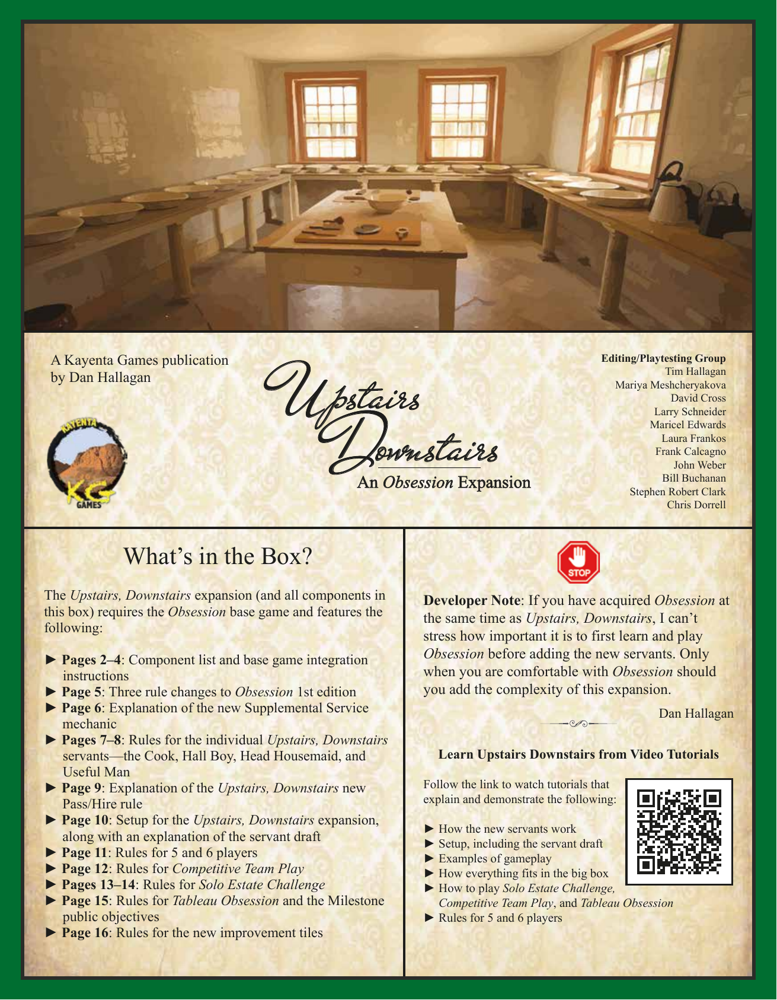
Upstairs, Downstairs 拡張は、以下の要素を追加するメジャー拡張です:
- 5人・6人プレイへの対応
- 新しい使用人メカニズム（補助サービス）
- 新たなゲームモード（チームプレイ・ソロ・エステートチャレンジ・タブロー・オブセッション）
- マイルストーン（公開目標）
- 新しい改築タイルと上流階級カード
コンポーネント一覧
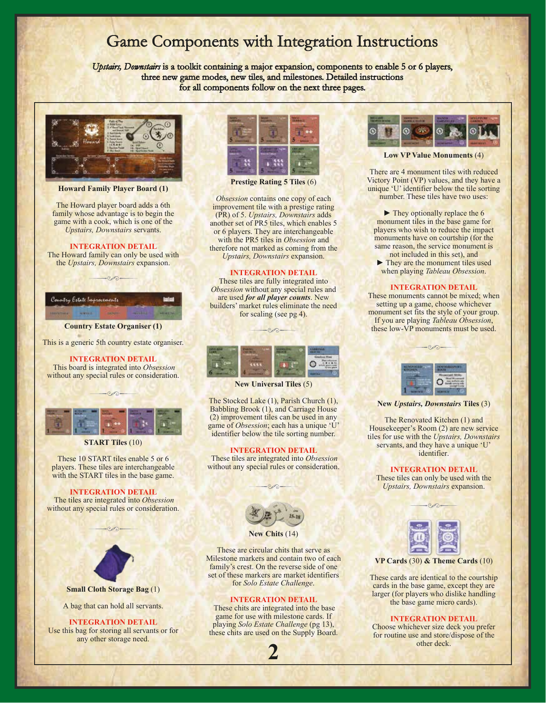
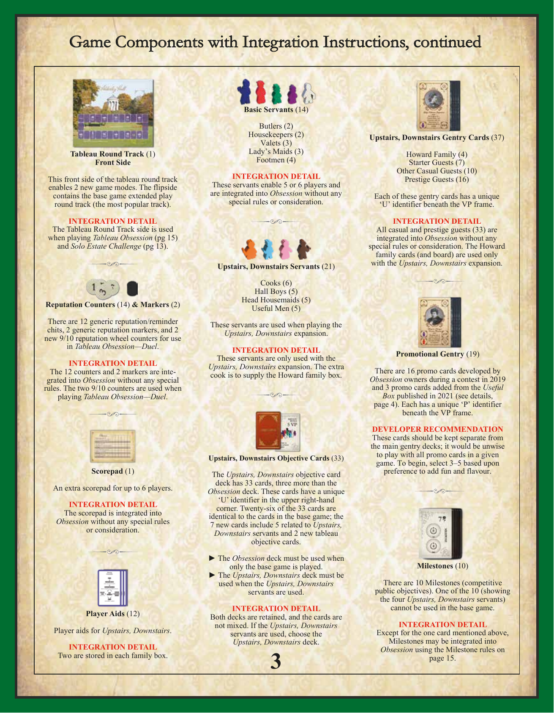
ボード・オーガナイザー
タイル
チット・コイン
使用人ミープル（新規）新規
カード
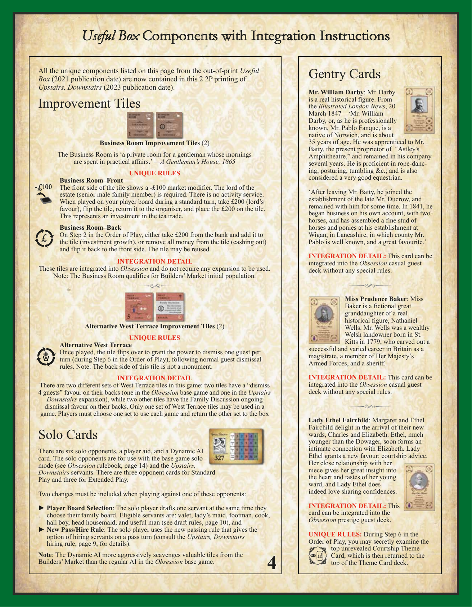
追加コンポーネント（Useful Box）
商務室（Business Room）について
商務室は「必需品（ESSENTIALS）」タイルで、名声レーティング0のSTARTタイルです。商務室のフロント面（前面）には名声 –£100 の修飾子があり、£200を受け取って£300を銀行に返すことができます（純利益£200）。このタイルはプレイヤーに追加の資金弾力性を与えます。
- 商務室（前面）: ステップ2でこのタイルを使う場合、プレイヤーは評判が下がらず£200を支払います（活動の代わりに）。タイルを表向きにして£300を取ります。
- 商務室（裏面）: このタイルが裏向きになった後、以下の2択があります。①£200を取って銀行に£100を払い戻す（改築の「収益増長」）、②タイルを表向きにして£300を取ります。
代替西テラス（Alternative West Terrace）について
代替西テラスタイルは同じ活動でも2通りの使い方ができるユニークな2枚のタイルです。2つの異なる「名声（PRESTIGE）」改築タイルがあります——タイルの組み合わせにより、どちらかを選択してゲームに使用します。選ばなかった方のタイルは箱に戻します。
基本ゲームへのルール変更点
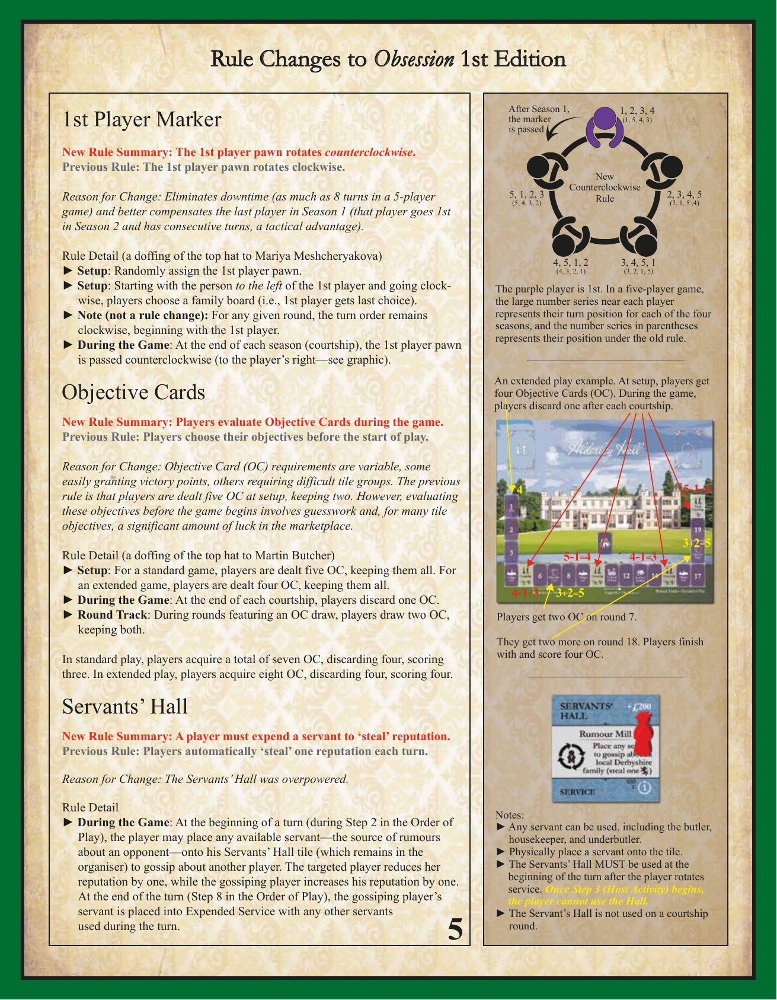
① 先手プレイヤーマーカー（1st Player Marker）
変更理由: ダウンタイムを削減し（5人プレイでは最大8ターン先手が遅れることがあった）、先手の戦術的優位を均衡させるためです。
ルール詳細:
- 先手プレイヤーをランダムに決めます。
- セットアップ: 先手プレイヤーの左隣りから時計回りに家族ボードを選びます。
- ゲーム中: どのラウンドでも、手番順は時計回りのまま変わりません。
- シーズンの末（求婚イベント）: 先手ポーンは反時計回りに移動します（右隣のプレイヤーへ）。
② 目標カード（Objective Cards）
変更理由: 目標カードの要件が変動するため（簡単に勝利点を稼げるものや、達成困難なタイルを要求するものがある）、以前のルールでは評価が遅すぎました。
ルール詳細:
- 標準ゲームではプレイヤーは5枚の目標カードを持ちますが、拡張ゲームでは8枚持ちます。
- 目標カードのOC要件（目標カード）は変動します——一部は勝利点を簡単に稼げ、他は達成困難な特定タイルを必要とします。OC要件が低い場合、達成目標を4枚保持して得点します（価値の低いものは捨てます）。
- ラウンドトラック: OCドローラウンドでは2枚引きます（1枚保持）。
③ 使用人の食堂（Servants' Hall）
変更理由: 基本ゲームでは使用人の食堂が自動的に評判を供給しすぎていたため、修正されました。
ルール詳細:
- ゲーム中のターン時（手番のステップ2）: プレイヤーは使用可能な任意の使用人（執事を含む）を選んで使用人の食堂タイルに置きます。これにより、相手の評判を1段階下げ、自分の評判を1段階上げます。
- ターンの終わり（プレイの順序ステップ8）: ゴシップした使用人は待機サービスに置かれます。
- 使用人の食堂は求婚ラウンドに使用できません。
ルール注意事項:
- 執事を含む任意の使用人を使用できます。
- 使用人を物理的にタイルに配置します（ステップ2の開始前）。
- 使用人はゴシップによる恩恵を得られません（評判を上げるのみ）。
- 使用人の食堂は求婚ラウンドには使用できません。
新メカニズム：補助サービス（Supplemental Service）
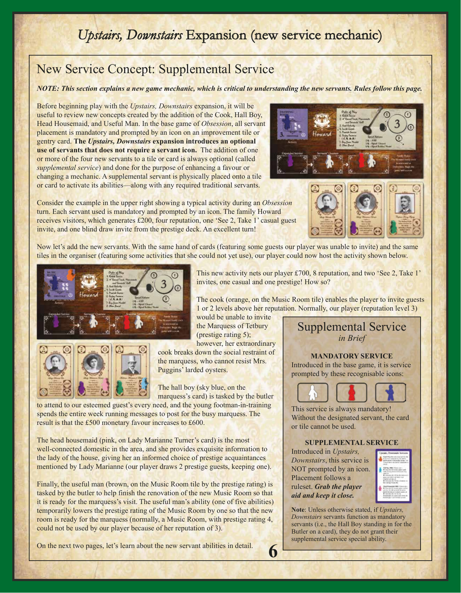
補助サービスとは
Upstairs, Downstairs 拡張でプレイする前に、新しい使用人が導入する新たなゲームコンセプトを理解することが重要です。基本ゲームでは、すべての使用人の配置は「必須（Mandatory）」で、改築タイルまたは上流階級カードのアイコンによって要求されます。
Upstairs, Downstairs 拡張では、使用人を任意で追加する「補助サービス（Supplemental Service）」という概念を導入します。これは改築タイルのアイコンによって要求されるものではなく、恩恵を強化したり変更したりするために任意で行われるものです。
| 必須サービス（Mandatory Service） | 補助サービス（Supplemental Service） | |
|---|---|---|
| 導入 | 基本ゲーム | Upstairs, Downstairs 拡張 |
| 要求元 | 改築タイルや上流階級カードのアイコン | なし（任意） |
| 配置 | アイコンに一致する使用人 | 使用人を掴んでプレイヤーボードに置く |
| 効果 | 活動を有効にする | 恩恵を強化・変更する |
補助サービスの使用例
右上の図では、料理人（Cook）が必須サービスとして使用されており、1人の一般ゲスト（Casual Guest）と1人の名声ゲスト（Prestige Guest）を招待できます（通常は招待できないレベル3の侯爵夫人（Lady Marquess of Tetbury）も！）。さらに、料理人は£700の恩恵と2つの恩恵「Take 2」も付与します。
ホールボーイ（Hall Boy, 水色）は執事（butler）に代わる行動をとり、マーケの物資を補充するために雇われます。若い使用人の訓練係として、マーキのすべての需要に応えます。ホールボーイの「£500の恩恵」は£600に変わります。
頭家政婦（Head Housemaid, 桃色）は音楽室のタイルの名声レーティングで示されるゲストを招待するためにあなたの活動でサービスを提供します。これにより£500の恩恵が£600になります。
最後に、便利屋（Useful Man, 茶色）はMusic Roomのタイルを名声1増加させて使用します。この活動に対して、プレイヤーは5人の名声ゲストを招待し、全員に対する恩恵を得ます。
新しい使用人
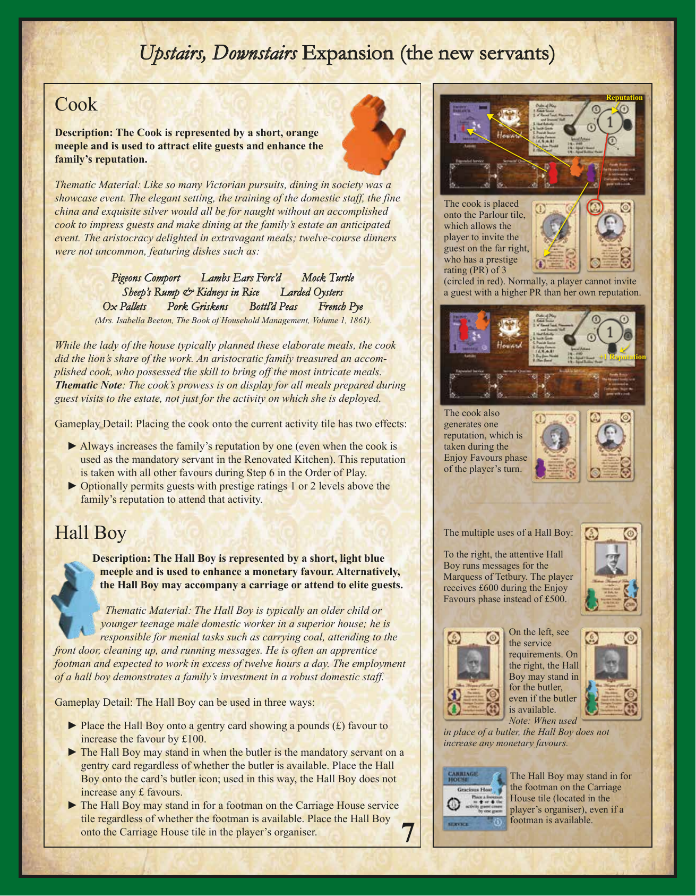
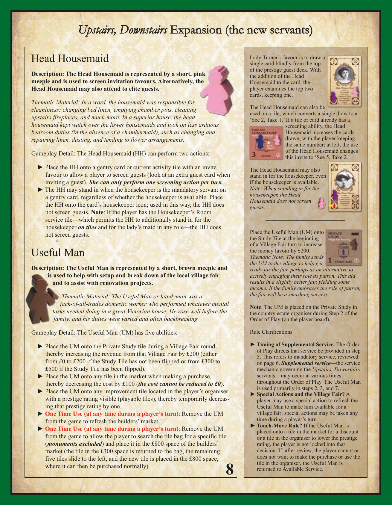
料理人（Cook）新規
説明: 料理人は短い橙色のミープルで表されます。エリートゲストを招待し、家族の評判を高める役割を担います。
テーマ的背景: ヴィクトリア朝において、社交の場での食事は洗練の証でした。精巧な料理、上品なテーブルセッティング、繊細な磁器と銀食器——これらなしには貴族の訪問も満足のいくものにはならず、才能ある料理人が影の立役者でした。
ゲームプレイの詳細:
- 料理人をアクティビティタイルに置くことで、評判を1段階上げる（ゲスト招待の有無に関わらず）。
- 料理人は名声レーティングが自分の評判より1〜2高い活動を主催できる。
- 料理人は常に評判を恩恵として1つ生成し、「恩恵の獲得（Enjoy Favours）」ステップで受け取ります。
ホールボーイ（Hall Boy）新規
説明: ホールボーイは短い水色のミープルで表されます。金銭的な恩恵を強化し、上流階級カードを補充する役割を担います。
テーマ的背景: 典型的なホールボーイ（またはボーイ）は若い、あるいは年齢の若い使用人で、玄関ホールの面倒を見る係でした。清掃し、訪問者を迎え、使用人の仕事を何でもこなしました。彼の採用は、家族が使用人への相当な投資をしている証でした。
ゲームプレイの詳細（3通りの使い方）:
- 上流階級カードのポンド（£）恩恵を示すカードにホールボーイを置いて、恩恵を£100増やす。
- ホールボーイを改築タイルに置いて（恩恵の獲得ステップ中）、恩恵に関わらず£100の恩恵を得る（ただし執事がいる場合のみ）。
- ホールボーイを馬車の家（Carriage House）サービスタイルに置いて（名声レーティングが1増加しているタイル）、そのタイルに置かれた従者の恩恵に加えて追加の恩恵を得る。
頭家政婦（Head Housemaid）新規
説明: 頭家政婦は短い桃色のミープルで表されます。侍女（Lady's Maid）としても機能し、エリートゲストへのスクリーニングを行います。
テーマ的背景: 家政婦長（Housekeeper）の監督下で、頭家政婦は下位の家政婦たちを統括し、家事全般の管理を担いました。家主の妻に代わって来客の取り次ぎも行い、邸宅の評判を守る役割を果たしていました。
ゲームプレイの詳細（2通りの使い方）:
- 頭家政婦をゲントリーカードに置いて、招待上限を1枚増やす（侍女の代わりとしてカードを使用し、上流階級カードを招待する場合に1体追加の侍女として機能する）。ただし、家政婦長がすでに侍女の代わりに使用されている場合、頭家政婦は招待上限を増やせません。
- 頭家政婦をステップ2（恩恵の獲得）で使用して、上流階級カードを1枚追加で引ける（「See 2, Take 1」）。頭家政婦が使用された場合、プレイヤーは上から2枚のカードを引き、1枚を選んで持ちます。
便利屋（Useful Man）新規
説明: 便利屋は短い茶色のミープルで表されます。村の市（Village Fair）の準備を行い、改築タイルを操作できます。
テーマ的背景: 便利屋（またはユーティリティーマン）は大邸宅で雑多な作業をこなした職人肌の男性使用人でした。修繕・メンテナンス・運搬など、家の機能を保つあらゆる作業を担いました。彼の採用は収入と使用人への投資のシグナルでした。
ゲームプレイの詳細（5通りの使い方）:
- 便利屋を村の市（Village Fair）ラウンドに配置して、評判を増やしながら£200の恩恵を得る（スタディタイルが反転していない場合は£300、反転している場合は£100のみ）。
- 便利屋を改築タイルの任意の場所に置いて（名声モニュメントを除く）、タイルの名声レーティングを1増やし（実際にはテーブル改築タイルを1枚リセットしてコストを£100下げる）、その後タイルを反転させる。
- （ステップ2の開始前に）改築タイルを前向きに戻すことができる（ただし、改築タイルの名声レーティングが邸宅の現在の名声より低い場合のみ）。便利屋をタイルに置いた後、£100のコストがかかります（£0に引き下げ、残りのコストを支払います）。
- 任意の改築タイル（モニュメントを除く）から取り出して、建築家市場に置く（タイルは£300スペースに置かれ、そこから通常に購入できます）——残り5枚のタイルを袋から引き、通常通りに市場に配置します。
- ワンタイム（プレイヤーのターン中いつでも）: 便利屋を邸宅オーガナイザーから取り出して捨て札にし、建築家市場をリフレッシュします（残り5枚のタイルを引き、通常通り配置します）——このリフレッシュは評判コストなしに行われます。
雇用ルールとパス時の雇用
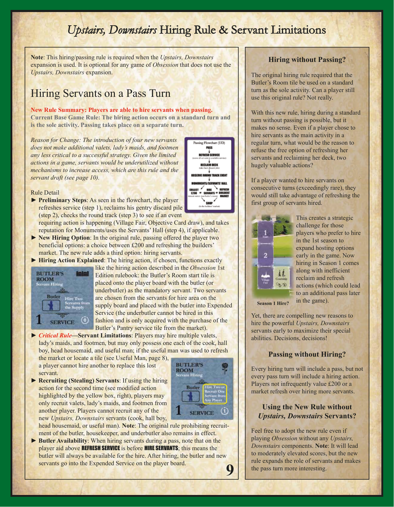
パス時に使用人を雇用できる新ルール
変更理由: Upstairs, Downstairs 拡張では、従僕・侍女・従者がそれほど重要でなくなります。これらの使用人がより重要な機能を持つ新使用人の追加により、単に使用人を雇用するためだけにパスする必要性が減ります。
パスターンの詳細
-
予備
予備ステップ: ルールブックのステップ1で示されたように、プレイヤーはゲントリーデッキを補充し（評判を下げてデッキを補充）、ラウンドトラックを確認（ステップ2）し、モニュメントに対するOCの引き直しを行い（該当する場合）、必要に応じて使用人の食堂を使います。
-
新
新しい雇用選択肢: 元のゲームでは、パスにより2つの選択肢（£200を受け取るか、建築家市場のタイルを購入するか）がありました。今では3つ目の選択肢として使用人を雇用することができます。
雇用アクションの詳細
雇用アクションを使用する場合：
- 執事（Butler）のサービスは必須です（執事の部屋タイルが必要）。
- 2人の使用人を共有ボードの「雇用可能（Servants for Hire）」エリアから選んで雇用できます。
- 雇用した使用人はすぐに「使用可能（Available Service）」に配置されます。
使用人の制限事項（Servant Limitations）
- 雇用制限: 雇用アクションを使用する場合、2体の使用人のうち従僕・侍女・従者のみ（Upstairs, Downstairs 使用人以外）が2体雇用の対象です。
- 招待制限: 名声レーティングが自分の評判より高い場合、招待できないゲストが存在します。執事がいない場合は特殊アクションを使えません（使用人の食堂がない限り）。
- 副執事の制限: 副執事は従者・従僕・執事の代わりにはなれますが、Upstairs, Downstairs の新使用人の代わりにはなれません。
- 料理人のリクルート制限: 料理人は料理人のみが持つ特殊能力（料理人の食堂など）からのみ雇用できます。
パスを使わずに新ルールを使う（オプション）
拡張を使う際、基本ゲームのプレイヤーは新ルールに慣れるまで元のパスルールを使い続けて構いません。プレイヤーは£200を受け取るか市場タイルを購入するかのどちらかを選べます。
ただし、新しいルールに切り替えた場合、パスはより戦略的で有益になります。特に序盤でパスして使用人を雇用するかどうかの判断——および、デッキを補充するかどうかの判断——は、ゲームの勝敗を左右する重要な選択です。
セットアップ（使用人ドラフト含む）
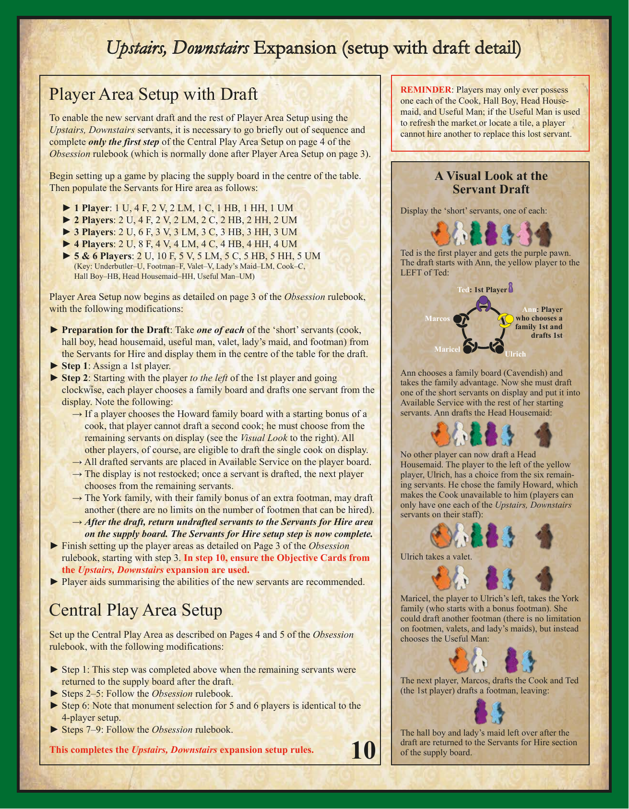
プレイヤーエリアのセットアップ（ドラフトあり）
Upstairs, Downstairs 拡張のプレイヤーエリアセットアップは、Obsession ルールブックのp.3の基本セットアップと同様ですが、「使用人ドラフト」が追加されます。
ゲーム開始時の使用人ドラフト方法:
- 「短い」使用人（料理人・ホールボーイ・頭家政婦・便利屋）を各1体ずつ取り出して、ランダムに4体を並べます。
- 先手プレイヤー（1stプレイヤー）から始めて、各プレイヤーが1体を選びます。
- 次に2番目のプレイヤーが選び、以降順に選びます。
- 2番目のラウンドでは、最後のプレイヤーから逆順で選びます（スネークドラフト方式）。
こうして、各プレイヤーは1体の新使用人を使用可能な状態からスタートします。ドラフトされなかった使用人は供給（Servants for Hire）エリアに戻します。
中央プレイエリアのセットアップ
Obsession ルールブックのp.4の手順に従いますが、以下の変更があります:
- ステップ1：ドラフト後に残りの使用人を共有ボードの「雇用可能」エリアに配置します（副執事×2、従者×10、従僕×4、侍女×3、頭家政婦×2、便利屋×4、料理人×5、ホールボーイ×4）。
- ステップ6：目標カードの引き直しについては、Upstairs, Downstairs 拡張の目標カードを使用します。
- ステップ7以降はObsession ルールブックに従います。
以上でUpstairs, Downstairs 拡張のセットアップは完了です。
5〜6人プレイのルール
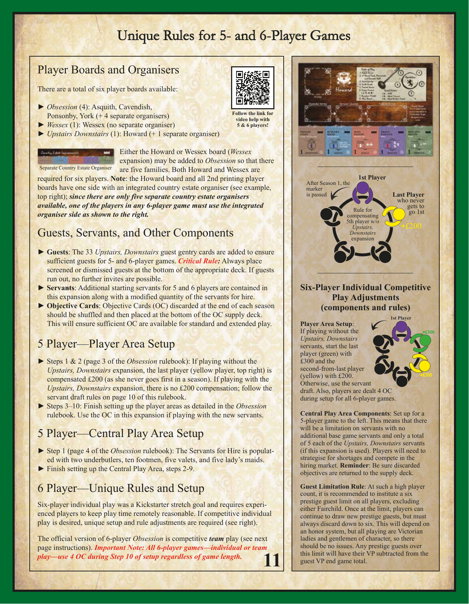
プレイヤーボードとオーガナイザー
利用可能なプレイヤーボードは4種類（Obsession 基本）に加え、ハワード家（Upstairs, Downstairs）とウェセックス家（Wessex拡張、別売）があります。なお、Obsessionには別のセパレートオーガナイザーがあります: ハワード家またはウェセックス家用（それぞれ別の拡張に1つずつ）。6人プレイではどちらかを使用します。
ゲスト・使用人・コンポーネント
- ゲスト: Upstairs, Downstairs の33枚のゲストカードを追加して、5〜6人プレイに十分なゲストを確保してください。重要ルール: プレイ中はスクリーニングが必要です（条件外のゲストが来た場合、スクリーニングアウトしてください。ゲストが用意できない場合は5人招待はできません）。
- 使用人: 5〜6人プレイの開始使用人も統合セットアップに従います。
- 目標カード: 目標カードはゲームの最後に捨てられます（各シーズンの末）。各プレイヤーは各シーズンの末に目標カードを1枚捨て、3枚保持します。
6人個人競争プレイの調整（ルール）
6人プレイの場合、特定の調整が必要です:
- プレイヤーエリアのセットアップ: ステップ1〜2はルールブックのとおり。6人プレイでは先手プレイヤーのポーン以外に補助ポーンがあります——最後のプレイヤーは補助を持たず、1st player gets no compensation (a tactical advantage!)。それ以外はObsessionのルールブックのとおり。
- 中央エリアのセットアップ: 2〜4人用のセットアップに従います（Obsession ルールブックp.4〜5）。以下の変更があります: 副執事×3、従者×10、従僕×5の侍女×4。
- ステップ3〜10: Obsession ルールブックに従います。
5〜6人プレイの招待制限（Guest Limitation Rule）
5〜6人プレイでは、非常に高い名声レーティングの活動を開催する際（例えば名声レーティング5以上）、招待できるゲストの枚数に制限があります——プレイヤーは名声ゲストをゲームから除外できます（一般ゲストのみ除外可能）。名声ゲストがゲームにいなくなると、プレイヤーは名声ゲストの招待数をゲーム内に残った枚数に変更します。この制限はゲスト招待上限に加算されます——除外した名声ゲストの数だけVPが引かれます。
チームプレイ（競争・協力）
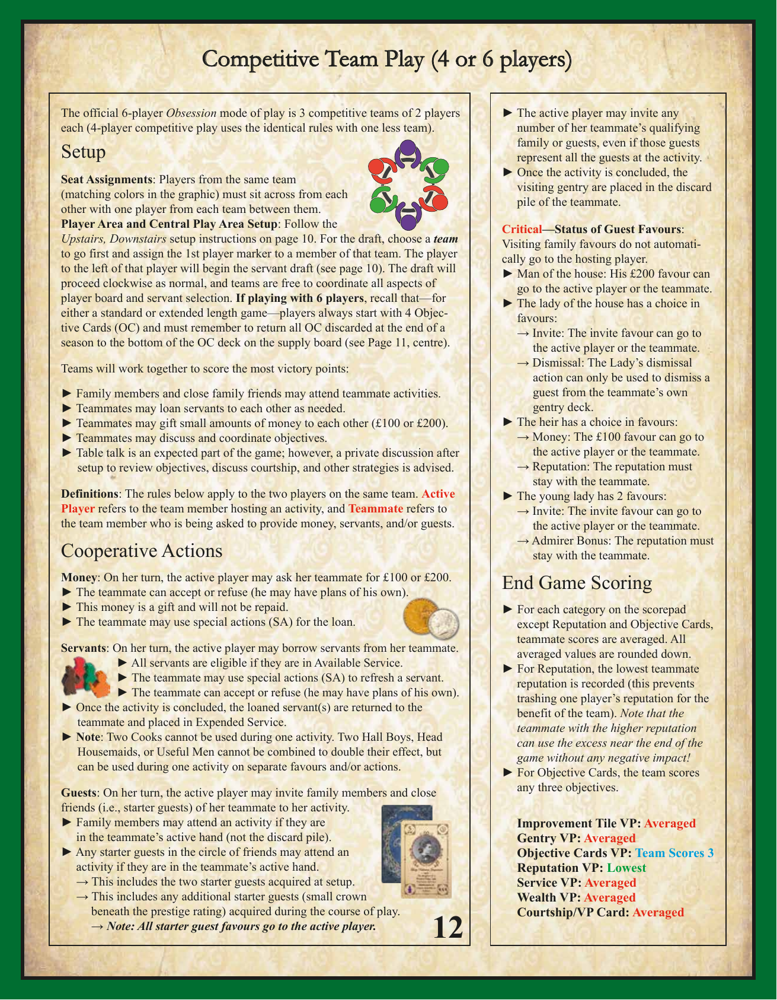
競争チームプレイ（4人または6人）
公式の6人競争プレイは、3チーム×2人（チームを同じグラフィックで識別）を使用するゲームモードです。先手プレイヤーは各チームに1人ずつ存在し、チームメンバーは向かい合って座ります。
セットアップ
Upstairs, Downstairs のセットアップ手順（p.10）と同様ですが、以下の変更があります：
- 先手プレイヤーのポーンを各チームに1つ割り当てます。
- チームのメンバーは隣接する家族ボードを選びます。
協力アクション（Cooperative Actions）
お金（Money）
チームメンバーはお互いに£100か£200を渡すよう依頼できます（または拒否できます——チームメンバーは自分の計画があります）。依頼された使用人が「使用可能」にいる場合、その使用人は依頼プレイヤーに渡すことができます。
使用人（Servants）
アクティブプレイヤーは自分のチームメンバーから使用人を借りることができます。すべての使用人が「使用可能（Available Service）」の状態にある場合に使用できます。チームメンバーは特殊アクション（SA）を自分でもチームメンバーのために使えます。活動が完了すると、使用人は借りた使用人の持ち主（チームメンバー）の「待機（Expended Service）」に戻されます。
ゲスト（Guests）
アクティブプレイヤーはチームメンバーを活動に招待できます（チームメンバーが「アクティブハンド」にいる場合のみ）。チームメンバーが活動に参加できる場合: アクティブプレイヤーはチームメンバーも招待できます（チームメンバーのカードがそのゲストの条件を満たす場合）。
- 家族カードはチームメンバーの恩恵を活動に参加させます。
- チームメンバーは共に手札に何かを加えることができます（初期ゲストカードも含む）。
- アドミラー・ボーナス（Admirer Bonus）: 評判はアクティブプレイヤーまたはチームメンバーのどちらかに入れます。
ゲームの終了（End Game Scoring）
スコアシートの各カテゴリは以下のように集計されます:
- 改築タイル VP: 平均
- 上流階級カード VP: 平均
- 目標カード VP: Team Score 3（チームスコア上位3枚合計）
- 評判 VP: 平均
- サービス VP: 平均
- 財富 VP: 平均
- 求婚活動 VP Card: 平均
ソロ・エステートチャレンジ（Solo Estate Challenge）
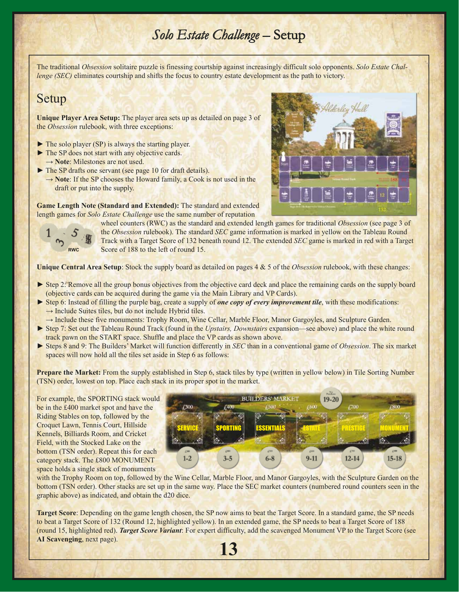
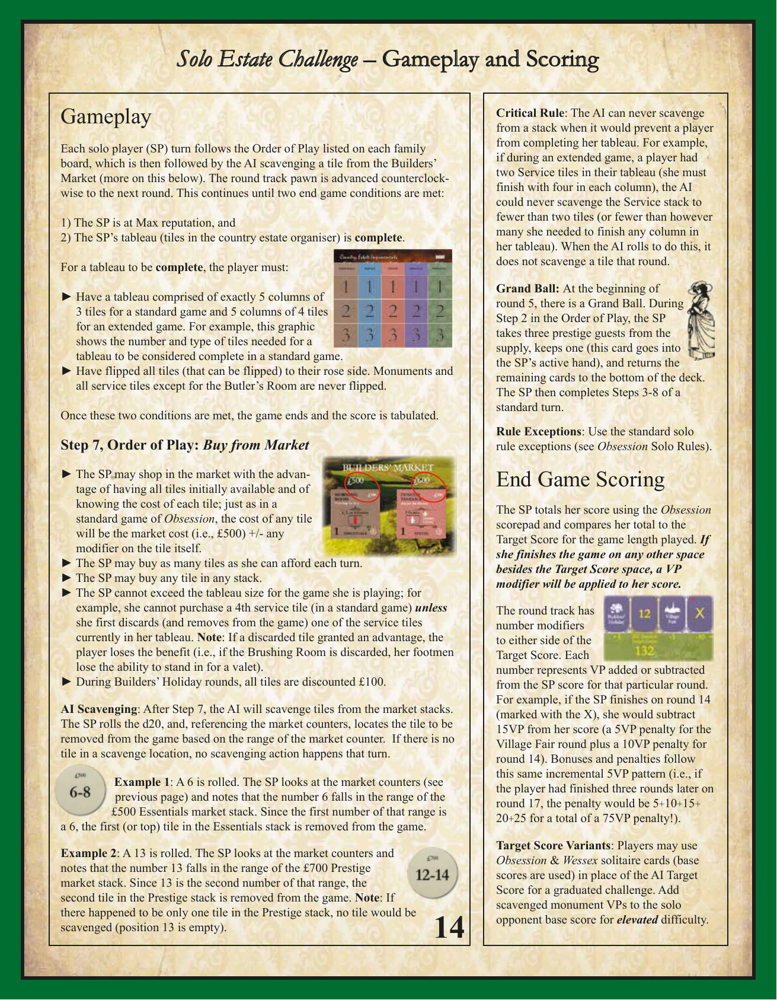
従来の Obsession ソリテアは「段階的に難しくなる対戦相手との求婚競争」でしたが、ソロ・エステートチャレンジ（SEC）は求婚をなくし、邸宅の発展のみを勝利への道とします。
セットアップ
固有のプレイヤーエリアのセットアップ
- ソリテアプレイヤー（SP）は常に先手プレイヤーです。
- SPは目標カードを持ちません。
- SPはドラフトで1体の使用人を引き、これを使用人として使います（Cook はハワード家ボード以外では使いません）。
ゲーム長（標準・拡張）
ソロ・エステートチャレンジの標準・拡張ゲームは Obsession の標準・拡張ゲームと同じ評判ホイールのカウンター（RWC）を使います。
- 標準ゲーム（ラウンド15）: ターゲットスコア 132
- 拡張ゲーム（ラウンド20）: ターゲットスコア 188
固有の中央エリアのセットアップ
- ステップ2: すべてのグループ目標カードを目標カードデッキから取り出し、ゲームに使用できるようにします（目標カードはMain LibraryとVP Cardsで入手可）。
- ステップ6: 初期個体群にはUpstairs, Downstairs 拡張のスタートタイルを含めます。以下の変更で変更: スイートタイルを含めますが、ハイブリッドタイルは含めません。
- ステップ7: タブロー用ラウンドトラックを使用します（5番目にあるSECが使用したもの）。そのラウンドトラックの白いポーンをSTARTスペースに置きます。VPカードと目標カードの初期配置については、タブロー用ラウンドトラックに従います（ゲームの残り時間に依存します）。チャールズとエリザベス・フェアチャイルドのカードは使用しません。
- ステップ8: Obsession のルールブックに従います。
ゲームプレイ
各ソリテアプレイヤーのターンは、プレイヤーボードの各家族について記したプレイの順序（Order of Play）に従います。ゲームは以下の2つの条件が満たされたときに終了します:
- SPが最大評判に達する。
- SPの邸宅オーガナイザー（Country Estate Organiser）のタイルが完成（揃う）する。
これらの条件が満たされると、ゲームは終了し、得点が計算されます。
ステップ7: プレイの順序「建築家市場での買い物（Buy from Market）」
SPは市場の優位を持ちます——すべてのタイルのコストが£500以下（標準ゲーム）かつ対象のタイルの整理番号（TSN）を把握した状態でプレイを行い、市場の優先タイルを先手として選びます。注: SPが重複タイルを引いた場合は市場から除外されます（通常のプレイとは異なります）。これはゲームメカニズムによる制限です。
SPはゲーム中いつでも市場からスカベンジを行います（タイルを市場から除去します）。スカベンジできるタイルがない場合は何も起きません。
AIスカベンジング（AI Scavenging）
ステップ7のあとに、SPは市場からスカベンジタイルを探します（AIが市場の最も価値の高いタイルを取る方法）。ダイスを振り、タイル整理番号（TSN）の最上位タイルが取られます。市場にスカベンジ対象のタイルがない場合は何も起きません。
得点計算（End Game Scoring）
SPはObsessionのスコアシートを使って得点を計算し、ゲーム長に応じたターゲットスコアと比較します。ターゲットスコアを超えた場合、SPは勝利です！
重要ルール:
AIは以下の場合にスカベンジを行いません:
- スタックからSPがタイルを完成させる前に同じタイルが2枚揃った場合
- たとえば、SPが名声レーティング4の市場を持っていて、AIが同じ名声4のタイルを取ることができない場合
ラウンドトラック（SECモード）
ラウンドトラックの数字はVPに加減算されます: 例えばSPがラウンド14（黄色でXが付いています）で終了した場合、15VPから引かれます。以降も同様で、数字が大きいほど大きなペナルティです。ラウンド17で終了した場合、5–10–15のパターンで3回7VPが追加されます。
ターゲットスコアのバリアント
上級難易度向けに、スカベンジされたモニュメントのVPをターゲットスコアに追加します（AIスカベンジング参照）。
タブロー・オブセッション（Tableau Obsession）
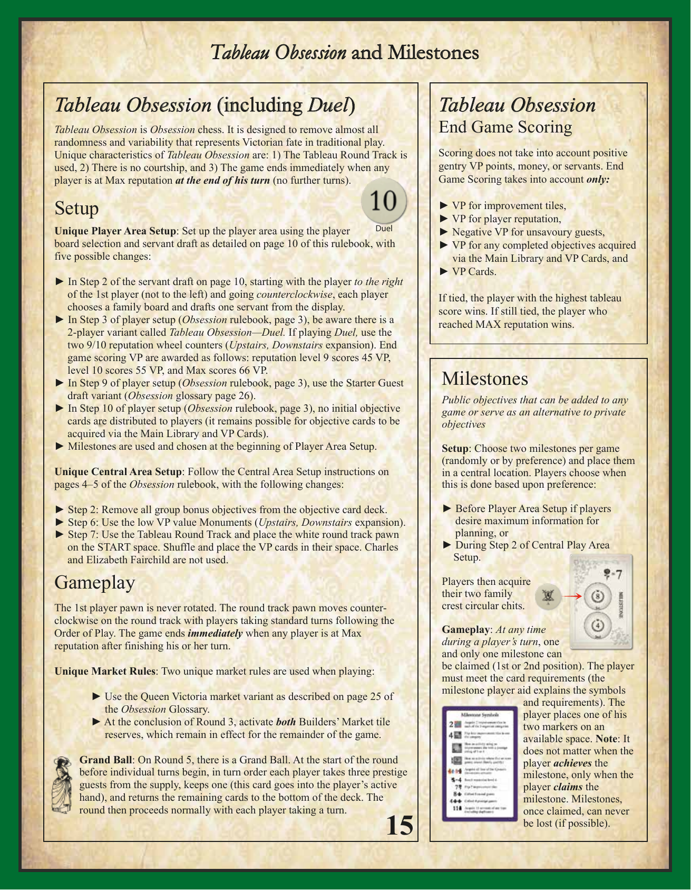
Tableau Obsession（「タブロー・デュエル（Duel）」とも呼ばれます）は Obsession の究極のゲームモードです。ランダム性をほぼ完全に排除し、ヴィクトリア朝の社会活動を代表するゲームとなっています。
- タブロー用ラウンドトラックを使用します（2）
- 求婚活動（Courtship）はありません（3）
- 各プレイヤーのターンが終わると即座に終了します（さらなるターンはありません）
タブロー・オブセッションの得点計算は以下のみです:
- 改築タイルVP
- プレイヤー評判VP
- 未使用ゲスト（Negative VP）
- VPカードと目標カード（Main Libraryで入手）
セットアップ
固有のプレイヤーエリアのセットアップ
- ステップ2: 家族ボードを選ぶ際、先手プレイヤーの左側のプレイヤーから時計回りに選びます。
- ステップ3: プレイヤーエリアのセットアップ時に2人の使用人が選ばれます: ①使用人ドラフト（p.10参照）、②もう1体の使用人は初期使用人です（ステップ5で説明した通常の5体）。最初に、2体の9/10評判ホイールカウンターを使用して、追加の評判段階8と9をトラックします。
- ステップ10: 目標カードは使用しません——ただし、よりダイナミックな経験を求める場合はステップ3から初期的に9つの目標カードを保持できます（拡張プレイでは）。
- マイルストーン: マイルストーンは任意で追加できます（マイルストーンについては後述）。
固有の中央エリアのセットアップ
- ステップ2: すべてのグループ（目標カード）をゲームから取り出して、ゲームで使用します（Main LibraryとVPカードで入手）。
- ステップ7: タブロー用ラウンドトラックを使用します。VPカードとラウンドトラックの詳細はタブロー用ラウンドトラックの説明に従います。
- ステップ8: 通常のルールに従いますが、Obsession の基本ゲームよりも前のセットアップでは、市場をさらに選別します: スタートタイルが市場に含まれないことを確認してください。
固有のゲームルール（Unique Master Rules）
- クイーン・ヴィクトリアカード: タブロー・オブセッションのプレイ時は、p.25のObsession Glossaryに記載された手順（クイーン・ヴィクトリアのユニークルール）で使用します。
- ラウンド5でのグランドボール: ラウンド5の先手プレイヤーのターンが始まる前に、グランドボール（Grand Ball）が開催されます。先手プレイヤーから始めて各プレイヤーは3枚の名声ゲストを引き（デッキから1枚取り）、手札に加えます。各プレイヤーは望む目標カードの残りを捨て、カードを保持します。ラウンドが普通に続きます。
- リソースを使い切る: ゲームの最後に評判目標を達成するために、プレイヤーはVPを収集して活発なリフレッシュで使い切ります（特に建築家の休日を利用して）。1回のリフレッシュを使い切ります。ゲームの最後まで取り組みます。
マイルストーン（Milestones）
マイルストーンは公開目標（Public Objectives）で、すべてのプレイヤーに公開されています。プライベートな目標カードとは異なり、複数のプレイヤーが同じマイルストーンを達成することはできません（早い者勝ち）。
全部で10枚のマイルストーンがあります（上位10枚のみ——下位10枚は基本ゲームでは使用不可）。
セットアップ
- プレイヤーエリアのセットアップを開始する前に、2枚のマイルストーンをゲームに追加します（任意で使用します）。または設定ごとに選択します（2〜3枚のマイルストーンを1枚ずつ）。
- それ以外の場合は各プレイヤーが好みのマイルストーンを選んでゲームで使用します。
ゲームプレイ
- プレイヤーのターン中いつでも、マイルストーンの条件を満たした場合、プレイヤーは自分のボードのエリアにマイルストーンを置きます。
- 各プレイヤーが取れるマイルストーンは1枚のみ（1stまたは2ndポジションのみ）。
- プレイヤーはマイルストーンの条件を満たした後にのみ請求できます（ゲームの要件を満たす）。
- マイルストーンは（可能であれば）失うことができません——ただし、条件が満たせなくなった場合は返還します（例えば、タイルが捨てられた場合）。
新しい改築タイル
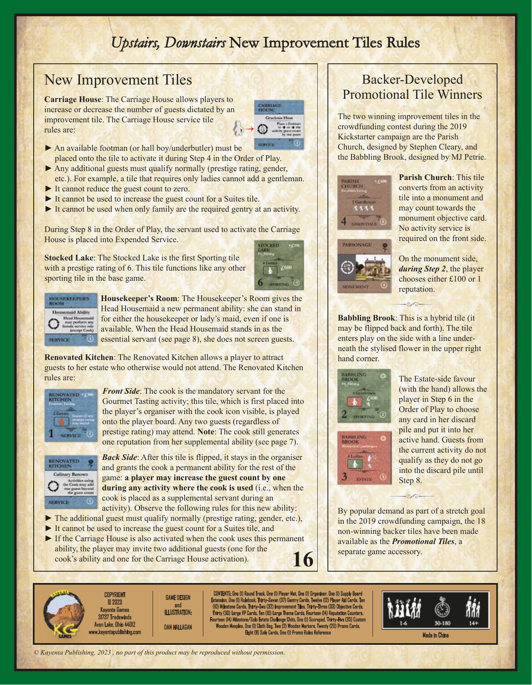
馬車の家（Carriage House）
馬車の家はプレイヤーが1人のゲストを活動に招待する機会を与える改築タイルです（名声レーティングが邸宅のものより高いゲストを含む可能性があります）。
ユニークルール:
- 使用可能な従者（Footman）またはホールボーイを必ず置かなければなりません。
- 通常のルールが適用されます（名声レーティング、対象ゲストの条件など）。
- 馬車の家はスイート・サービスタイルの招待のために使えません。
- 馬車の家を使用後は使えません（1ターンに1枚のタイルのみ）。
ストック湖（Stocked Lake）
ストック湖は名声レーティング4の最初のスポーツタイルです。基本ゲームの他のスポーツタイルと同様に機能します。
家政婦室（Housekeeper's Room）
家政婦室は家政婦長（Housekeeper）に恒久的な新能力を与えます。家政婦長はこのタイルを置くことで、活動中の必須使用人として侍女の代わりに使えます（つまり、侍女がいなくても家政婦長が侍女として機能します）。
改装厨房（Renovated Kitchen）
改装厨房は Cook（料理人）の使用人（または使用人食堂の使用人）によって起動されます。料理人がこのタイルを使うと、次のタイルの名声レーティングで最大の恩恵を得ます。
前面（Front Side）: このタイルは料理人の必須使用人のタイルで、邸宅に置かれたものです（料理人の名声レーティング補正を参照）。2人以上のゲストがいる場合（名声条件を満たす場合）、招待できます（名声レーティングの確認）。料理人を使うたびに評判を1上げます（すべての場合に）。
後面（Back Side）: このタイルが反転した後は、邸宅オーガナイザーに留まり、ゲームの残りの間ずっと料理人を便利屋として使えます（料理人の便利屋能力を使用）。料理人の前向きの場合と同様に、このサービスが使われると評判を1上げます。また、料理人を通常通りに他の活動に使えます（次の段落も参照）。
- 追加ゲストは通常の資格ルールに従う必要があります（名声レーティング、対象ゲストの条件など）。
- 料理人のサービスタイルは活動に1回しか使用できません。
- 馬車の家の招待のために料理人を使うことはできません。
- この料理人のサービスタイルは活動を行った後は使用できません（1ターンに1枚のタイルのみ）。
バッカー開発プロモーションタイル（Backer-Developed Promotional Tiles）
2019年のKickstarter キャンペーンで2枚の勝利プロモーションタイルが選ばれました:
- 教区教会（Parish Church）: 邸宅（ESTATE）改築タイルをモニュメントタイルとして使えます（アクションは不要です）。教会のフロント面は何もなし、後面は1枚の目標カードとして機能し（評判も£100も得られます）。
- バブリング・ブルック（Bubbling Brook）: このハイブリッドタイルは表/裏のどちらでも使えます。邸宅（ESTATE）側の恩恵は、ステップ4で任意のカードを1枚引いて手札に加えます。現在の活動のゲストは加算されませんが、参加します。後面のモニュメント側では、各ターンの開始（ステップ2）でプレイヤーは捨て札から1枚取ることができます。